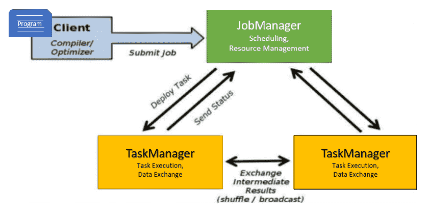
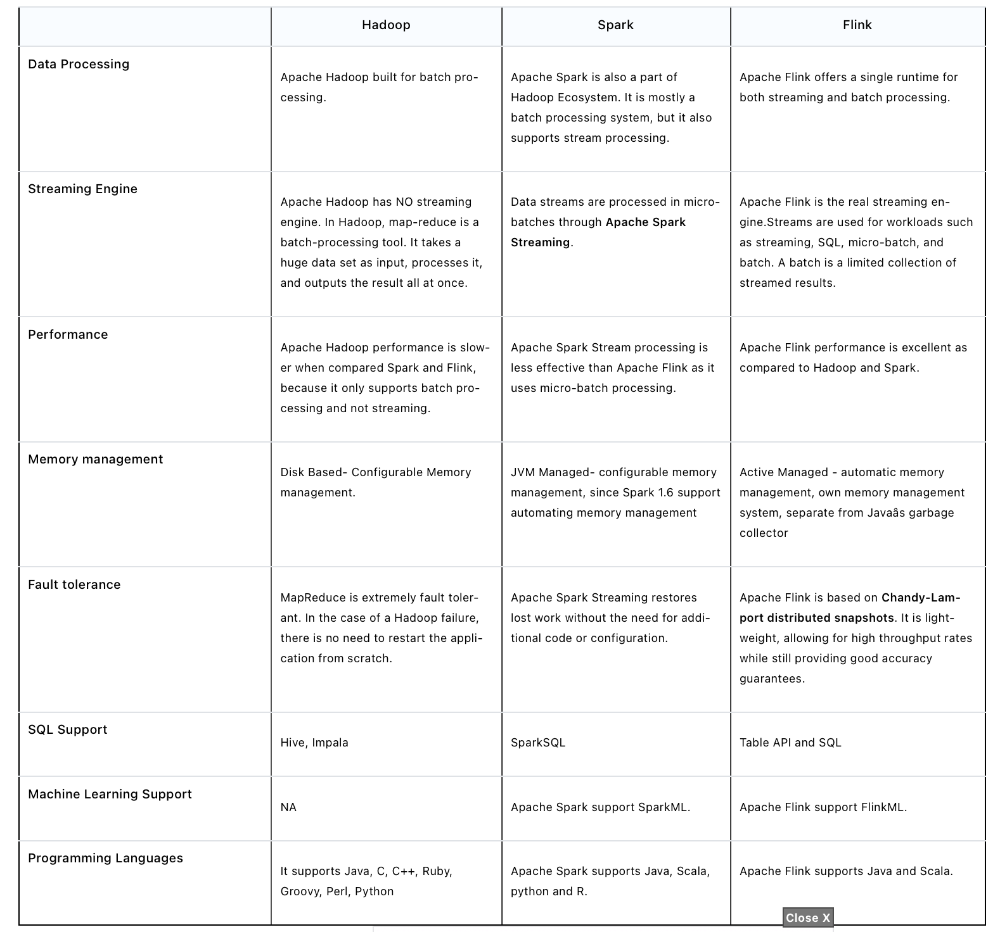
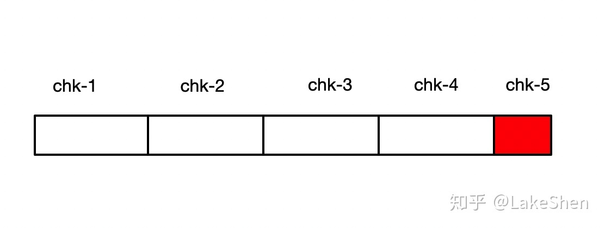
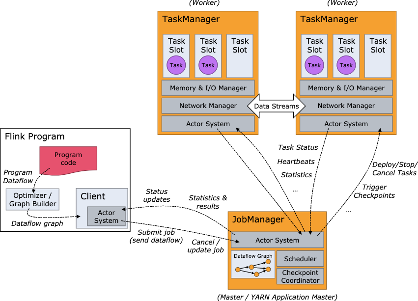
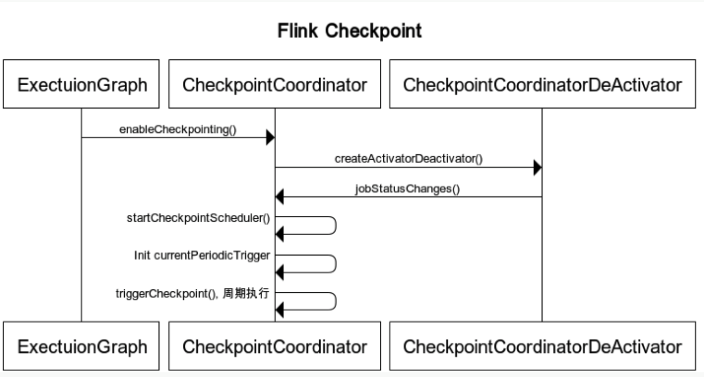
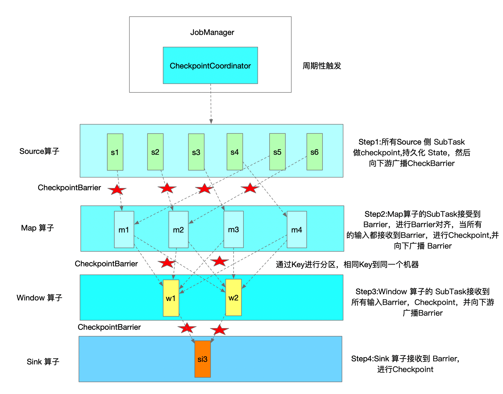
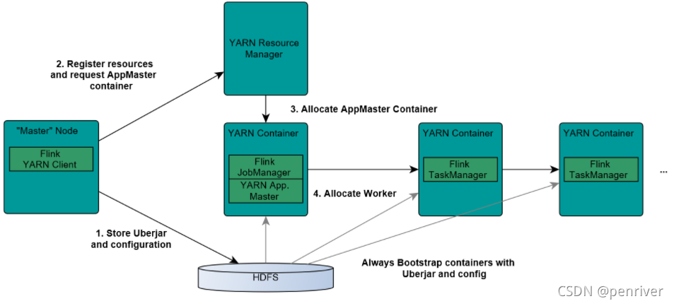

Faq Flink
Last updated: Feb 23, 2024Table of Contents
- 1. What is Apache Flink?
- 2. Explain Apache Flink Architecture?
- 2’ Explain Apache Flink execution graph and its step ?
- 3. Explain the Apache Flink Job Execution Architecture?
- 4. What is Unbounded streams in Apache Flink?
- 5. What is Bounded streams in Apache Flink?
- 6. What is Dataset API in Apache Flink?
- 7. What is DataStream API in Apache Flink?
- 8. What is Apache Flink Table API?
- 9. What is Apache Flink FlinkML?
- 10. What are the differences between Apache Hadoop, Apache Spark and Apache Flink?
- 11. What are the key programming constructs of a Flink streaming application?
- 12. explain Complex Event Processing (CEP) ?
- 13. What are the Apache Flink domain-specific libraries?
- 14. What are the different ways to use Apache Flink?
- 15. Explain how flink implement exactly once ? what’s the logics, mechanisms… ?
- 16. Explain flink savepoint ?
- 17. Explain flink checkpoint ?
- 17’ Explain flink Barrier ?
- 18. Explain flink backpressure ?
- 18’. Explain flink data exchange mechanisms ?
- 19. Explain how flink submit job to yarn ?
- 20. Explain how flink parallelism ?
- 21. Explain flink watermark ?
- 22. Explain flink EvenTime, IngestionTime, ProcessingTime ?
- Ref
FLINK FAQ
1. What is Apache Flink?
- Flink is built around a distributed streaming data-flow engine written in Java and Scala. Flink runs every dataflow programm in a data-parallel and pipelined fashion.
2. Explain Apache Flink Architecture?
-
Apache Flink is based on the Kappa architecture. The Kappa architecture uses a single processor - stream, who accepts all information as a stream, and the streaming engine processes data in real-time. Batch data in kappa architecture is a form of streaming data.
-
Ref
- note below !!!
- https://www.shuzhiduo.com/A/amd0NwnXJg/
2’ Explain Apache Flink execution graph and its step ?
- StreamGraph -> JobGraph -> ExecutionGraph -> physical graph
3. Explain the Apache Flink Job Execution Architecture?

- Program
- It is a piece of code that is executed on the Flink Cluster.
- Client
- client server that takes code for to-run program, creates a job dataflow graph, which is then passed to JM (job manager).
- Job manager (JM)
- It is responsible for generating the execution graph after obtaining the Job Dataflow Graph from the Client. It assigns the job to TaskManagers in the cluster and monitors its execution.
- trigger
Checkpointperiodically
- Task manager ™
- It is in charge of executing all of the tasks assigned to it by JobManager. Both TaskManagers execute the tasks in their respective slots in the specified parallelism. It is in charge of informing JobManager about the status of the tasks.
4. What is Unbounded streams in Apache Flink?
- Any type of data is produced as a stream of events. Data can be processed as unbounded or bounded streams.
- Unbounded streams have a beginning but no end. They do not end and continue to provide data as it is produced.
- Unbounded streams should be processed continuously, i.e., events should be handled as soon as they are consumed. Since the input is unbounded and will not be complete at any point in time, it is not possible to wait for all of the data to arrive.
5. What is Bounded streams in Apache Flink?
- Bounded streams have a beginning and an end point.
- Bounded streams could be processed by consuming all data before doing any computations.
- Ordered ingestion is not needed to process bounded streams since a bounded data set could always be sorted. Processing of bounded streams is also called as batch processing.
6. What is Dataset API in Apache Flink?
- The Apache Flink Dataset API is used to do
batchoperations on data over time. - This API is available in Java, Scala, and Python.
- It may perform various transformations on datasets such as filtering, mapping, aggregating, joining, and grouping.
7. What is DataStream API in Apache Flink?
- The Apache Flink DataStream API is used to handle data in a continuous
stream. - On the stream data, you can perform operations such as filtering, routing, windowing, and aggregation.
- On this data stream, there are different sources such as message queues, files, and socket streams, and the resulting data can be written to different sinks such as command line terminals.
8. What is Apache Flink Table API?
- Table API is a relational API with an expression language similar to SQL.
- This API is capable of
batchandstreamprocessing. - . It is compatible with the Java and Scala Dataset and Datastream APIs.
- Tables can be generated from internal Datasets and Datastreams as well as from external data sources. You can use this relational API to perform operations such as join, select, aggregate, and filter.
9. What is Apache Flink FlinkML?
- FlinkML is the Flink Machine Learning (ML) library.
10. What are the differences between Apache Hadoop, Apache Spark and Apache Flink?

11. What are the key programming constructs of a Flink streaming application?
- A Flink streaming application consists of four key programming constructs.
-
- Stream execution environment - Every Flink streaming application requires an environment in which the streaming program is executed.
-
- Data sources Data sources are applications or data stores from which the Flink application will read the input data from.
-
- Data streams and transformation operations - Input data from data sources are read by the Flink application in the form of data streams.
-
- Data sinks - The transformed data from data streams are consumed by data sinks which output the data to external systems.
-
12. explain Complex Event Processing (CEP) ?
- FlinkCEP is an API in Apache Flink, which analyses event patterns on continuous streaming data. These events are near real time, which have high throughput and low latency. This API is used mostly on Sensor data, which come in real-time and are very complex to process.
- CEP: It is used for complex event processing.
- https://www.tutorialspoint.com/apache_flink/apache_flink_libraries.htm
13. What are the Apache Flink domain-specific libraries?
- FlinkML: It is used for machine learning.
- Table: It is used to perform the relational operation.
- Gelly: It is used to perform the Graph operation.
- CEP: It is used for complex event processing.
- https://www.cloudduggu.com/flink/interview-questions/
14. What are the different ways to use Apache Flink?
Apache Flink can be deployed and configured in below ways.
- Flink can be setup Locally (Single Machine)
- It can be deployed on a VM machine.
- We can use Flink as a Docker image.
- We can configure and deploy Flink as a standalone cluster.
- Flink can be deployed and configured on Hadoop YARN and another resource managing framework.
- Flink can be deployed and configured on a Cloud system.
15. Explain how flink implement exactly once ? what’s the logics, mechanisms… ?
distributed snapshot2 phases commit- TwoPhaseCommitSinkFunction
- Steps)
- step 1) for each checkpoint, flink will start a “transaction”, add all inform to the transaction
- beginTransaction
- before transaction, create a tmp file, write data into it first
- beginTransaction
- step 2) when data sink to external system, not commit, but
pre-commit- pre-commit
- “flush” in-memory data into tmp file, then close file. repeat this step to next checkpoint
- pre-commit
- step 3) when flink receive checkpoint’s confirmation, commit the transaction, data is then “really” written to external system
- commit
- move tmp file to actual dest path. May have some delay
- commit
- NOTE : external system also needs to have “transaction” mechanism, so can have end-to-end “exactly once”
- step 1) for each checkpoint, flink will start a “transaction”, add all inform to the transaction
- Ref
16. Explain flink savepoint ?
savepointis a “global backup” of flink status of a timestamp moment- For software upgrade, change conf. Can make flink restart from the last savepoint
- Triggered by users
- will keep existing until user delete
- CAN recognize
savepointas aspecial snapshotofcheckpointin a specific time - Trigger way
flink savepointcommandflink cancel -scommand, when cancel flink job- via REST API :
**/jobs/:jobid /savepoints**
- Ref
17. Explain flink checkpoint ?
- checkpoint save current flink status, is a “false tolerance” mechanism
- flink status
- Operator status : e.g. offset
- KeyedState status : e.g. : MapState、ListState、ValueState
- flink status
- make sure flink can auto-recover when error/exception during running
- example : if flink failed on chk-5, then it will try to recover from chk-4

- managed/op by flink. Users only need to define parameter
- Auto op by flink
- default
concurrent = 1-> there is ONLY ONE runs per flink app - 3 components work on checkpoint : JM, TM, ZK
- Mechanisms
- JM triggers checkpoint periodically
- Once TM receive all CheckpointBarrier, it will start checkpoint op, once completed, TM will inform JM. ONLY when all sink operator finish their checkpoint, and send back to JM, such checkpoint is called completed
- in HA, checkpoint will be saved in ZK as well
- CheckpointBarrier is a special event, will flow to downstream operator, ONLY when skink operator receive it, we say checkpoint completed
- NOTE : CheckpointBarrier sync time also need to be considered


CheckpointCoordinatoris an important class in Checkpoint op- it has below important methods
- triggerCheckpoint
- triggerSavepoint
- restoreSavepoint
- restoreLatestCheckpointedState
- receiveAcknowledgeMessage


- it has below important methods
- Disable checkpoint via
CheckpointConfigsetting- DELETE_ON_CANCELLATION : delete checkpoint when program canceled
- RETAIN_ON_CANCELLATION : keep checkpoint when program canceled
- Common reasons why checkpoint fail:
- No exception handling on client/external system code
- e.g. json parse error, time out, exception on sink system
- freqent GC, Not enough memory -> cause OOM
- internet issues, machine issues
- No exception handling on client/external system code
- Things to care when set up checkpoint
- Ref
17’ Explain flink Barrier ?
- A special event
- Will follow event from upstream operator to downstream operator
- ONLY when “final” operator (e.g. sink operator) receive Barrier, and confirm checkpoint is OK, then this “checkpoint” is completed
18. Explain flink backpressure ?
-
Is a common concept in stream framework
-
It happens when
"downstream" CAN'T catchup "upstream"'s processing speed- -> So there’s a mechanism
push backto upstream and ask themslow downtheir process
- -> So there’s a mechanism
-
Can due to internet, disk I/O, freqent GC, data hotpoint… or data skew, code efficiency, TM memory, its GC
-
Can also affect checkpoint
- if data get delay -> checkpoint get delay (more longer)
- if “exactly once” -> have to wait delay barrier -> more data will be cached -> checkpoint get bigger
- above make cause checkpoint failed, or OOM
-
Can monitor via Flink UI (version > 1.13)
-
Not really a problem at all cases, have a backpressure sometimes means system is using fully of its resources. But a serious backpressure can cause system delay
-
Ref
18’. Explain flink data exchange mechanisms ?
- exchange in same Task
- exchange in different Task, same TM
- exchange in different Task, different TM
- Ref
19. Explain how flink submit job to yarn ?
- Components
- ResourceManager (RM)
- NodeManager (NM)
- AppMaster (
job manager runs in the same container) - Container (task manager runs on it)
- Steps
- step 1) flink client upload
flink jar, app jar, and confto HDFS - step 2) client submit job to Yarn ResourceManager, and register resources
- step 3) ResourceManager diepense container and launch
AppMaster, then AppMaster load jar files and config env, then launchjob manager - step 4) once above steps success, AppMaster knows job manager’s ip
- step 5) Job Manager create a new flink conf for task manager, this conf also uploaded to HDFS. AppMaster offer flink web service endpoint
- NOTE : endpoints offered by Yarn are ALL temporal ones, user can run multiple flink on Yarn
- step 6) AppMaster ask ResourceManager for resources. NodeManager load flink jar and launch TaskManager
- step 7) TaskManager successfully launched, send hear-beat to job manager, ready to execute missions (job manager’s command)
- step 1) flink client upload
- pros:
- “use as needed” -> can raise memory usage pct in system
- can run jobs basd on “priority” as priority setting in Yarn jobs
- can automatically deal with
Failover on various roles- JobManager, TaskManager error/exception… can automatically retry/rerun by Yarn
- Pic

- Ref
20. Explain how flink parallelism ?
21. Explain flink watermark ?
watermarkis atimestamp(event happened time, NOT processed time)watermarktells Flinksince when it DOES NOT need to wait for delay event- Stream frameworks use it for “evaluate if there is still a event not arrived”
- Types
- Punctuated Watermark
- make watermark when there is “special event”
- not relative to window time, depends when “special event” is received
- usually used for “real real-time” scenario
- Periodic Watermark
- periodically make watermark
- time gap can be defined by users
- Punctuated Watermark
- examples :
- “out-of-order”
watermarktimestamp > window endTime- there is data in window_start_time, window_end_time]
- “late element” event case
- once after
watermark-> triggerwindow-> do the op/calculation
- once after
- “out-of-order”
- Ref
22. Explain flink EvenTime, IngestionTime, ProcessingTime ?
EvenTime- “event happened time”. The most accurate time when things happended
IngestionTime- time when event ingested into Flink, the time source operator created. Is Flink job manager’s system time in most cases
ProcessingTime- Event processed time. Is timestamp when transformation happened. created in Flink task manager